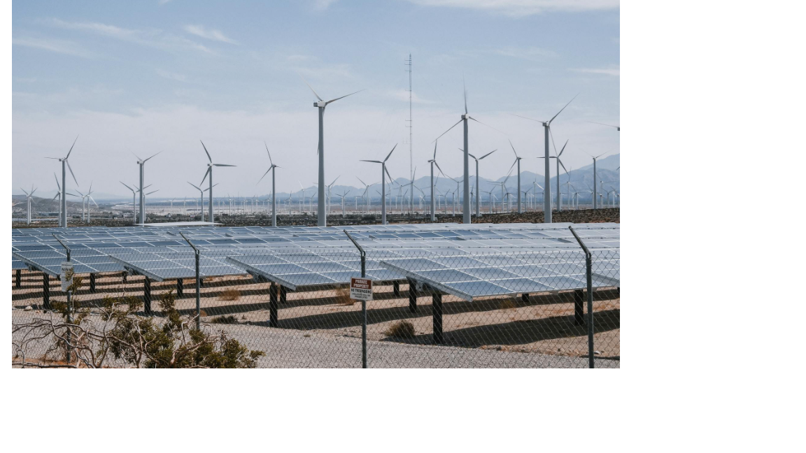

¿Que son las energias limpias?
Las energias limpias son aquellas que se obtienen de fuentes renovables y que no generan contaminacion durante su uso. algunas de estas fuentes incluyen la energia solar, eolica, hidroelectrica y la energia generada a partir del Hidrogeno verde.
Beneficios de las Energias Limpias
- 😶🌫️ Reduccion de Emisiones de CO₂
- 🌤️Disminucion de la contaminacion Atmosferica
- ☀️Disponibilidad de recursos inagotables como el sol
- ⚡Impulso al desarrollo de comunidades Energeticas